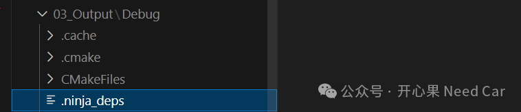
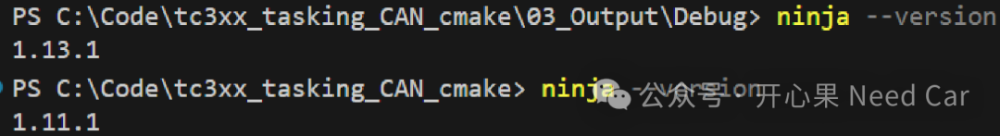
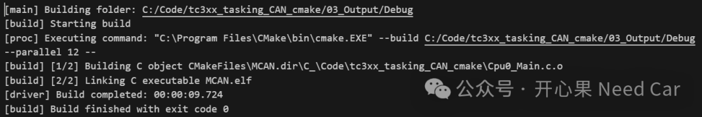

开心果 Need Car · 2025-11-10T06:20:00+08:00 · 微信原文
[build] ninja: error: FindFirstFileExA("C:/Code/HSM/tc3xx_hsm_cmake/01_Source/app/secure_boot):The filename, directory name, or volume label syntax is incorrect.
1、问题原因

.ninja_deps是Ninja构建系统中的一个依赖数据库文件，它在构建过程中自动生成并维护，用于加速和优化增量构建。.ninja_deps记录文件依赖关系，这些依赖信息会被存储在 .ninja_deps中，以便后续构建时快速判断哪些文件需要重新编译。
通过检查.ninja_deps文件，检测到路径冲突（C:/ 和 C_）。检测的Python脚本链接：
https://onlinegdb.com/FGK8ucJeq
所以，报路径不识别的原因是因为.ninja_deps存储了不正确的路径信息，导致.ninja_deps损坏，进而使得增量编译时出错。
compile_commands.json，clangd 可用来做智能补全 | |


3、Unix Makefiles切Ninja
Unix Makefiles切Ninja，修改CMakePresets.json文件
修改CMakePresets.json后的内容，参考如下链接：
https://onlinegdb.com/j2JBvjhuq
往期精彩回顾